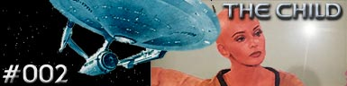

|

Escrito
por Jon Povill & Jaron Summers
Enquanto a Enterprise
passa atravs de uma estranha nuvem no espao, uma forma de
energia penetra na nave e segue para o quarto de Ilia. A forma
energtica envolve todo o seu corpo e ela demonstra muito prazer.
Ao se levantar na manh seguinte Ilia informa ao Dr. McCoy que
est grvida.
Apenas trs dias depois Ilia d a luz a uma bela menina, que
comea a crescer assustadoramente depressa. Em questo de horas
a criana j est com o equivalente a dez anos de idade.
Enquanto McCoy tenta descobrir o que est acontecendo, a
Enterprise sofre diversos problemas que quase levam a uma catstrofe.
Ilia d o nome de Irska para a menina, que quer dizer, em na lngua
dos Deltanos, "Luz Brilhante".
Kirk descobre que a estrutura molecular do casco da Enterprise est
cedendo, e que a nave poder virar apenas poeira em poucas horas.
Xon faz uma unio mental com Irska e informa que ela tem de ser
teletransportada diretamente para uma forma de energia brilhante
que est seguindo a nave. Apesar da tristeza que se abate sobre
Ilia, a criana teletransportada e o casco da nave prontamente
se restabelece. Irska transforma-se em uma entidade de energia.
Os tripulantes da Enterprise percebem que, de alguma estranha
maneira, a forma de energia utilizou Ilia como um 'primeiro-tero'
para seu beb, e que a nave era o segundo. A forma de vida aliengena
fez isso para que a criana aprende sobre as emoes e
necessidade humanas, assim como a habilidade de fazer sacrifcios
em prol de uma causa maior.
Curiosidades
 Este roteiro foi reescrito
e utilizado no segundo ano da Nova Gerao, pois
na poca havia uma greve de roteiristas em Hollywood, impedindo a
compra de novos roteiros. Para no atrasar o cronograma da srie,
os produtores resolveram adaptar uma histria no aproveitada
para a Fase II de Jornada. Este roteiro foi reescrito
e utilizado no segundo ano da Nova Gerao, pois
na poca havia uma greve de roteiristas em Hollywood, impedindo a
compra de novos roteiros. Para no atrasar o cronograma da srie,
os produtores resolveram adaptar uma histria no aproveitada
para a Fase II de Jornada.
"Uma das chaves para que eu
fosse escolhido como o editor de histrias da Fase II foi
que escrevi o roteiro de 'The Child' em apenas uma
semana!", conta um dos autores do episdio, Jon Povill.
Episdio
anterior | Prximo
episdio |